Code
# load in encoded data
data <- read_csv('data/RR2/modeling_data_encoded.csv')
dim(data) # 48,140 x 89[1] 48140 90Research Report 2: STA 9890
Research Report 2 focuses on Ensemble Learning Techniques for Fair Classification.
As Machine Learning (ML) Systems become more integrated into society, their development and implementation continue to come under scrutiny. One aspect of this scrutiny comes from the idea of fairness, that Machine Learning models should treat people fairly, regardless of characteristics. Usually, this refers to a protected class, such as race, gender, or ethnicity. In broader contexts, it can also refer to other factors such as income.
An example of fairness in life is what we hope to see in the justice system. Every person, regardless of who they are or what their background is, should in theory have the law applied equally and impartially, as well as be given the means to access the legal system. The color of someone’s skin, their income, their gender identity, whether their favorite day of the week is Wednesday, none of this should affect their ability to have a just and impartial time in the justice system.
In an ML context, fairness means that a model’s outputs/predictions do not systemically disadvantage certain groups based on demographic information. The most straight-forward method of achieving this is demographic parity across different subgroups. This means that each subgroup of race, gender, etc., receives the positive outcome at equal rates.
There are other contexts of fairness, such as fairness in pricing, which deals with pricing algorithms and how to properly balance them between societal equity and the supply-and-demand of the private sector. However, that is outside the purview of this report.
Below are two examples of societal unfairness baked into ML Systems.
The COMPAS algorithm developed by the firm Equivant is commonly used by judges and forecasts which criminals are most likely to reoffend, using a quantitative approach to fairness. Although it was correctly predicting recidivism rates for defendants regardless of rates (a good True Positive rate), it was scoring black people who would not re-offend at twice the risk of recidivism as their white counterparts (bad False Positive rate). While Equivant argued that because their model was correctly predicting recidivism rates when a defendant did reoffend, it proved their model was unbiased. ProPublica, who led the research into their model’s False Positives, argued against the misclassification based on race that occurred in the model.
Amazon has been implementing ML Systems in many of its processes for years now. One of these processes, their hiring process, came under scrutiny in 2018 after their ML team discovered that the model used to “rate” candidates in the hiring process was discriminating against women. This was due to the tech industry in-general being largely made up of men, which was reflected in the resumes submitted to the company over a 10-year period. The model effectively self-taught itself to be more male-centric, penalizing resumes that had terms such as “women” in the scoring metric (ie if the resume said “captain of women’s chess team”). This is also a reflection of how the STEM field is in-general, which is a mostly male-dominated industry, hence why most of the resumes coming in were from men. This is an example of societal bias being used in an ML context.
A common approach to measuring fairness is the aforementioned deviation from demographic parity. If we divide the populations into two groups, \(G_1\) and \(G_2\), the deviation from demographic parity associated with a classifier \(f : R^p \rightarrow {0,1}\) is given by:
\[ \text{DDP}(f) = \left| \frac{1}{|G_1|} \sum_{i \in G_1} f(x_i) - \frac{1}{|G_2|} \sum_{i \in G_2} f(x_i) \right| = \left| \mathbb{E}_{x \sim G_1}[f(x)] - \mathbb{E}_{x \sim G_2}[f(x)] \right| \]
To research the potential of bias in a social context (and by extent, in a ML System), I picked a dataset from UC Irvine’s Machine Learning Repository. The dataset represents ten years (1999-2008) of clinical care at 130 US hospitals and integrated delivery networks. Each row concerns hospital records of patients diagnosed with diabetes, who underwent laboratory, medications, and stayed up to 14 days.
The target class in this dataset is the READMITTED column which has three values: No, <30 and >30. This feature asks whether a patient was readmitted following their initial hospital visit within 30 days (early readmission) or after 30 days (general readmission). Its raw data contains 101,766 records with 50 columns (\(101,766 \space \times \space 50\)) and a secondary spreadsheet used to connect three id columns in the data to an English meaning (ie admission_type_id = 1 is an Emergency).
This target was turned into two potential target-y classes: readmit_early and readmit_at_all. The former is just the values of <30 while the latter is either <30 or >30. Without any data cleaning or feature engineering, the class imbalance for readmit_early is about 88.8% : 11.2% for 0 : 1, while readmit_at_all is about 53.9% : 46.1% for 0 : 1. Although there is value in looking into readmit_early as a target, the class imbalance widens following the data cleaning section and it becomes a virtually untenable target class without any sort of artificial balancing such as the SMOTE method.
As a note: the data cleaning and EDA was done in Python to create the eventual modeling data. The full cleaning and EDA code can be found on my GitHub if interested.
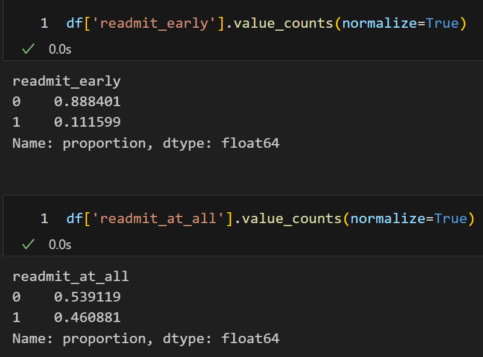
The first step to dealing with the data was cleaning it. This started by checking for NULLs, which in this dataset was denoted by the presence of ? in the data. Only 7 of the 50 original features have NULLs. race, diag_1, diag_2, and diag_3 (diagnoses 1, 2 and 3 respectively) have < 3% of their records as NULL. payer_code and medical_specialty (insurance provider and medical specialty of the overseeing physician) are about 40% NULL.
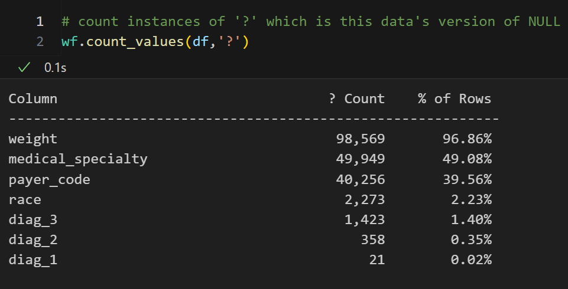
For these 6 columns, I elected to remove all records with the NULL values in any of these columns. This removed about 40% of the data, bringing the total number of records down to 48,140.
The 7th column, weight, was comprised of nearly 97% NULL data. Once I accounted for the NULLs in the first 6 columns, only about 3,000 of the 48,140 records actually had a filled value for weight. This is actually extremely unfortunate as weight is both a demographic feature and an especially important feature in something like diabetes. However, there is simply too much data lost by keeping it at the expense of ~45,000 records, while imputation of some sort (ie mean, forward fill, random-fill, etc. imputation) would be too sketchy given the sheer volume of NULL values. Because of this, the weight feature has been completely dropped from the model.
Another consideration in the dataset is that some patients are “repeat” patients. Looking at the distribution of these patients, we see most only visit the hospital once, with a median of 1, an upper bound on the IQR of 2, and a mean of ~1.49 visits. With this in mind, any patient whose number appears in the data more than 3 times was removed. Further, because this still means there are some duplicates, when it comes time to split the data, it will be split on patient_nbr to avoid patients appearing in both the training and testing data.
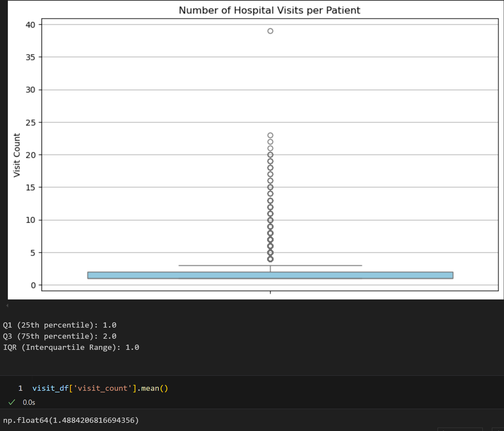
The next step was to engineer some features using standard techniques:
Categorical encoding
Really just left the id columns as-is for this one
Debatable if this is a good idea or not since there’s no inherent order to the numbers
Ordinal encoding
Dummy encoding
race \(\rightarrow\) race_AfricanAmerican, race_Caucasian…Binarizing
Scaling numeric data
“Other” grouping
Threshold for diagnoses columns at < 100 instances
Threshold for race, medical_specialty, payer_code at < 1000 instances
With the NULL values dealt with and the features engineered, the final step before modeling was feature selection. Due to the dummy encoding, there were a few hundred features to choose from. Most of these new features were based on the diagnoses 1-3 columns, since they each had a lot of values. With this in mind, checking the correlation between those dummy columns and the y-target readmit_at_all, only the top-50 diagnoses features were kept based on absolute correlation. These 50 diagnoses features and 37 other features, including dummy encoded race variables, age brackets and gender, were kept in the modeling data. The final dataset contains both potential y targets of readmit_at_all and readmit_early, however, the latter (along with patient_nbr) is dropped once it comes time to modeling.
To create a FairStacks Ensemble model in Section 5, the first step is to build several Base Learner Models that will eventually be stacked into the ensemble. A diverse array of model types can be used here. Below are 5 model types along with Confusion Matrices of their respective predictions.
Data Dimensions:
[1] 48140 90Train-Test-Split
# remove the secondary y-target
data <- data |>
dplyr::select(-readmit_early)
y <- data$readmit_at_all
X <- data |> dplyr::select(-readmit_at_all)
set.seed(42)
# TRAIN TEST SPLIT #
# need to separate by patient_nbr so same patients don't end up in train and target
patient_ids <- unique(data$patient_nbr)
train_ids <- sample(patient_ids, size = 0.8 * length(patient_ids))
train_data <- data |> filter(patient_nbr %in% train_ids)
test_data <- data |> filter(!(patient_nbr %in% train_ids))
# drop patient_nbr
train_data <- train_data |> dplyr::select(-patient_nbr)
test_data <- test_data |> dplyr::select(-patient_nbr)The below sub-sections will just contain the code-folds for the models with their respective Confusion Matrices and accuracy scores. The models will eventually be used in the FairStacks ensemble.
# Model
nb_model <- naiveBayes(readmit_at_all ~ ., data = train_data)
# Predict
nb_pred <- predict(nb_model, test_data)
# Predict proba
nb_prob <- predict(nb_model, test_data, type="raw")[, 2]
# Create a tibble for yardstick
results <- tibble(
truth = factor(test_data$readmit_at_all),
prediction = factor(nb_pred)
)
# Build the confusion matrix
nb_cm <- confusionMatrix(as.factor(nb_pred), as.factor(test_data$readmit_at_all))
# Convert to data frame
nb_cm_df <- as.data.frame(nb_cm$table)
# Plot with ggplot2
ggplot(data = nb_cm_df, aes(x = Reference, y = Prediction, fill = Freq)) +
geom_tile(color = "white") +
geom_text(aes(label = Freq), size = 5) +
scale_fill_gradient(low = "white", high = "steelblue") +
labs(
title = "Naive Bayes Confusion Matrix",
x = "Actual Label",
y = "Predicted Label"
) +
theme_minimal()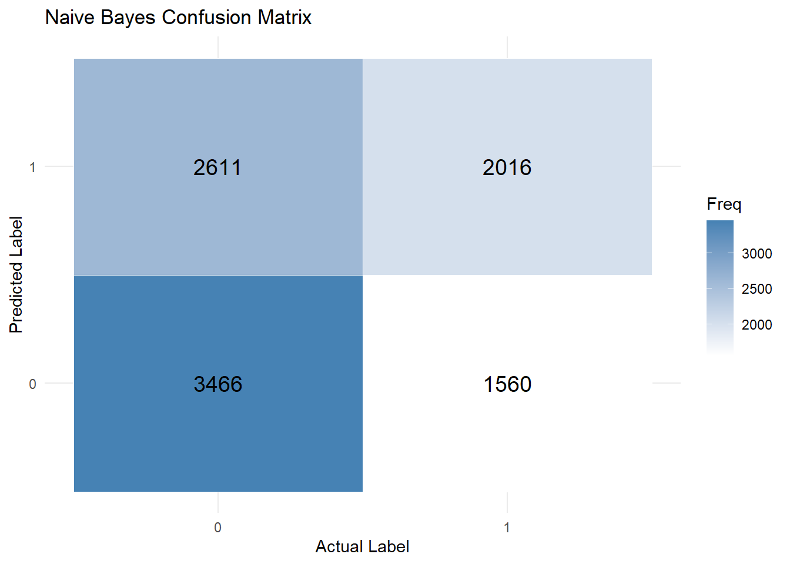
Accuracy: 0.5679 # Model
lda_model <- lda(readmit_at_all ~ ., data = train_data)
# Predict on test set
lda_pred <- predict(lda_model, test_data)
# Confusion matrix (and extract accuracy)
cm <- confusionMatrix(as.factor(lda_pred$class), as.factor(test_data$readmit_at_all))
cm_df <- as.data.frame(cm$table)
ggplot(data = cm_df, aes(x = Reference, y = Prediction, fill = Freq)) +
geom_tile(color = "white") +
geom_text(aes(label = Freq), size = 5) +
scale_fill_gradient(low = "lightblue", high = "steelblue") +
labs(title = "LDA Confusion Matrix", x = "Actual", y = "Predicted") +
theme_minimal()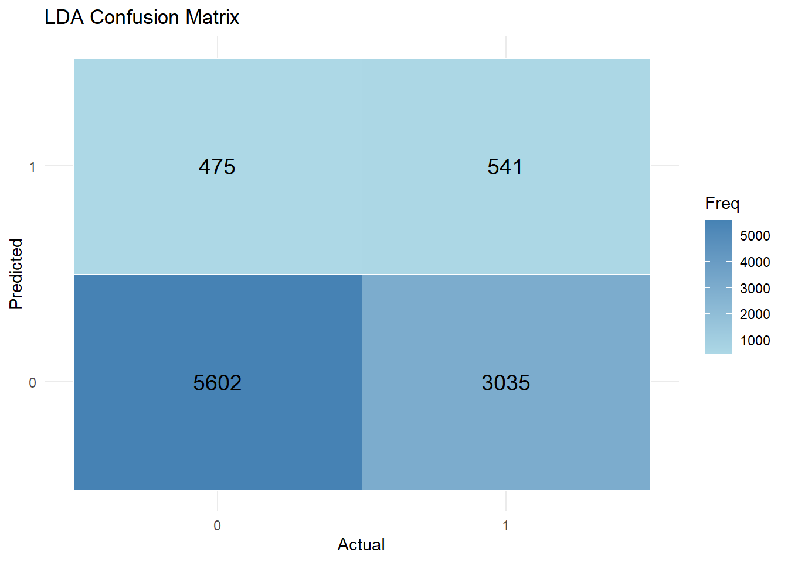
LDA Accuracy: 0.6364 # X and y prep using pipe
X_train <- train_data |>
dplyr::select(-readmit_at_all) |>
as.matrix()
y_train <- ifelse(train_data$readmit_at_all == 1, 1, -1)
X_test <- test_data |>
dplyr::select(-readmit_at_all) |>
as.matrix()
y_test <- test_data$readmit_at_all
n <- nrow(X_train)
p <- ncol(X_train)
w <- Variable(p)
b <- Variable(1)
C <- 1 # You can tune this
# Hinge loss
hinge_loss <- sum(pos(1 - multiply(y_train, X_train %*% w + b)))
# Objective
objective <- Minimize(0.5 * sum_squares(w) + C * hinge_loss)
problem <- Problem(objective)
result <- solve(problem)
# Predicted margin values
margin_scores <- X_test %*% result$getValue(w) + result$getValue(b)
# Convert to class predictions
svm_pred <- ifelse(margin_scores >= 0, 1, 0)
# Generate confusion matrix object
svm_cm <- confusionMatrix(as.factor(svm_pred), as.factor(y_test))
# Convert table to data frame
svm_cm_df <- as.data.frame(svm_cm$table)
# Plot the heatmap
ggplot(data = svm_cm_df, aes(x = Reference, y = Prediction, fill = Freq)) +
geom_tile(color = "white") +
geom_text(aes(label = Freq), size = 5) +
scale_fill_gradient(low = "white", high = "darkgreen") +
labs(
title = "SVM with CVXR Confusion Matrix",
x = "Actual Label",
y = "Predicted Label"
) +
theme_minimal()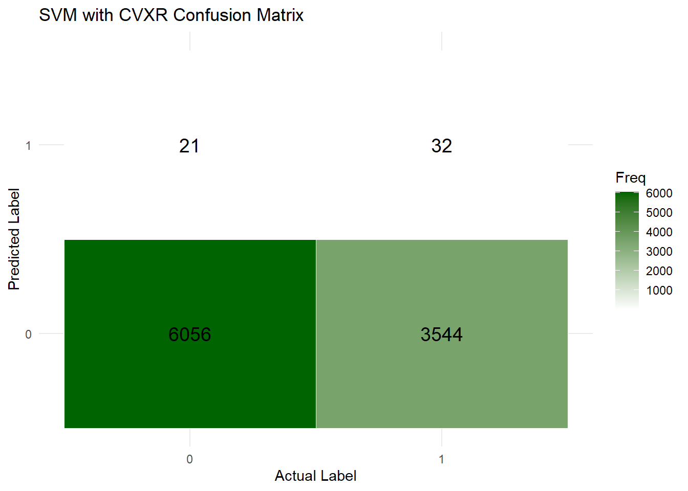
SVM (CVXR) Accuracy: 0.6307 # LogReg with CVX #
# --- Shared Setup ---
n <- nrow(X_train)
p <- ncol(X_train)
# Define CVXR variables
beta <- Variable(p)
intercept <- Variable(1)
margin <- X_train %*% beta + intercept
# Prediction function
predict_logit <- function(result, beta, intercept, X) {
b <- result$getValue(beta)
i <- result$getValue(intercept)
1 / (1 + exp(- (X %*% b + i)))
}
# 1. Plain
log_loss_plain <- sum(logistic(- y_train * margin))
problem_plain <- Problem(Minimize(log_loss_plain))
result_plain <- solve(problem_plain, solver = "ECOS")
prob_pred_plain <- predict_logit(result_plain, beta, intercept, X_test)
pred_class_plain <- ifelse(prob_pred_plain >= 0.5, 1, 0)
cm_plain <- confusionMatrix(as.factor(pred_class_plain), as.factor(y_test))
df_plain <- as.data.frame(cm_plain$table)
df_plain$model <- "Plain"
# 2. Ridge
lambda_ridge <- 1
log_loss_ridge <- sum(logistic(- y_train * margin)) + lambda_ridge * sum_squares(beta)
problem_ridge <- Problem(Minimize(log_loss_ridge))
result_ridge <- solve(problem_ridge, solver = "ECOS")
prob_pred_ridge <- predict_logit(result_ridge, beta, intercept, X_test)
pred_class_ridge <- ifelse(prob_pred_ridge >= 0.5, 1, 0)
cm_ridge <- confusionMatrix(as.factor(pred_class_ridge), as.factor(y_test))
df_ridge <- as.data.frame(cm_ridge$table)
df_ridge$model <- "Ridge"
# 3. Lasso
lambda_lasso <- 1
log_loss_lasso <- sum(logistic(- y_train * margin)) + lambda_lasso * norm1(beta)
problem_lasso <- Problem(Minimize(log_loss_lasso))
result_lasso <- solve(problem_lasso, solver = "ECOS")
prob_pred_lasso <- predict_logit(result_lasso, beta, intercept, X_test)
pred_class_lasso <- ifelse(prob_pred_lasso >= 0.5, 1, 0)
cm_lasso <- confusionMatrix(as.factor(pred_class_lasso), as.factor(y_test))
df_lasso <- as.data.frame(cm_lasso$table)
df_lasso$model <- "Lasso"
# Combine for plotting
df_all <- bind_rows(df_plain, df_ridge, df_lasso)
# Create individual plots
plot_cm <- function(df, title, fill_color) {
ggplot(df, aes(x = Reference, y = Prediction, fill = Freq)) +
geom_tile(color = "white") +
geom_text(aes(label = Freq), size = 5) +
scale_fill_gradient(low = "white", high = fill_color) +
labs(title = title, x = "Actual", y = "Predicted") +
theme_minimal()
}
p1 <- plot_cm(df_plain, "Plain LogReg", "firebrick")
p2 <- plot_cm(df_ridge, "Ridge LogReg", "steelblue")
p3 <- plot_cm(df_lasso, "Lasso LogReg", "darkgreen")
# Combine plots
(p1 | p2 | p3) + plot_layout(guides = "collect") & theme(legend.position = "bottom")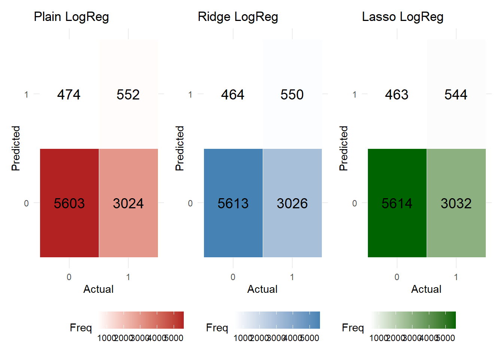
Plain Accuracy: 0.6376 Ridge Accuracy: 0.6385 Lasso Accuracy: 0.6379 # Decision Tree Classifier #
# Make sure outcome is a factor for classification
train_data$readmit_at_all <- as.factor(train_data$readmit_at_all)
test_data$readmit_at_all <- as.factor(test_data$readmit_at_all)
# Train single decision tree
tree_model <- rpart(
readmit_at_all ~ .,
data = train_data,
method = "class",
control = rpart.control(
minsplit = 10, # allow smaller groups to split
cp = 0.001, # complexity parameter, lower = more splits
maxdepth = 10 # allow deeper trees
)
)
# Predict on test data
tree_preds <- predict(tree_model, newdata = test_data, type = "class")
# Evaluate
# Confusion matrix
tree_cm <- confusionMatrix(tree_preds, test_data$readmit_at_all)
# Accuracy
tree_accuracy <- tree_cm$overall["Accuracy"]
cat("Decision Tree Accuracy:", round(tree_accuracy, 4), "\n")Decision Tree Accuracy: 0.6318 # Convert to data frame for plotting
tree_cm_df <- as.data.frame(tree_cm$table)
# Plot
ggplot(data = tree_cm_df, aes(x = Reference, y = Prediction, fill = Freq)) +
geom_tile(color = "white") +
geom_text(aes(label = Freq), size = 5) +
scale_fill_gradient(low = "white", high = "darkorange") +
labs(
title = "Decision Tree Confusion Matrix",
x = "Actual Label",
y = "Predicted Label"
) +
theme_minimal()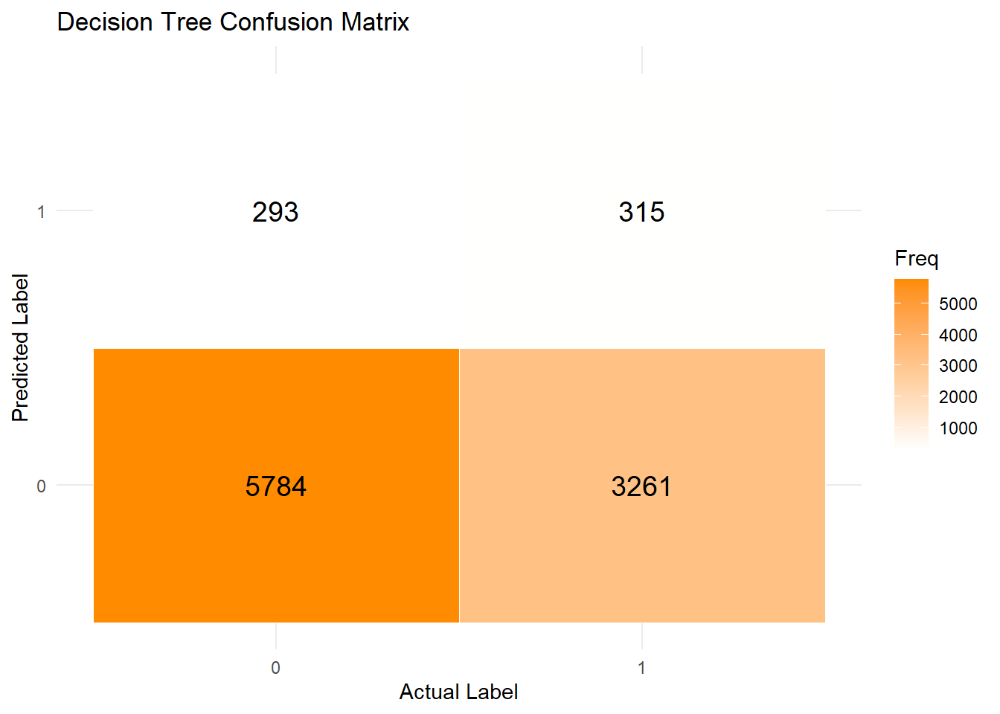
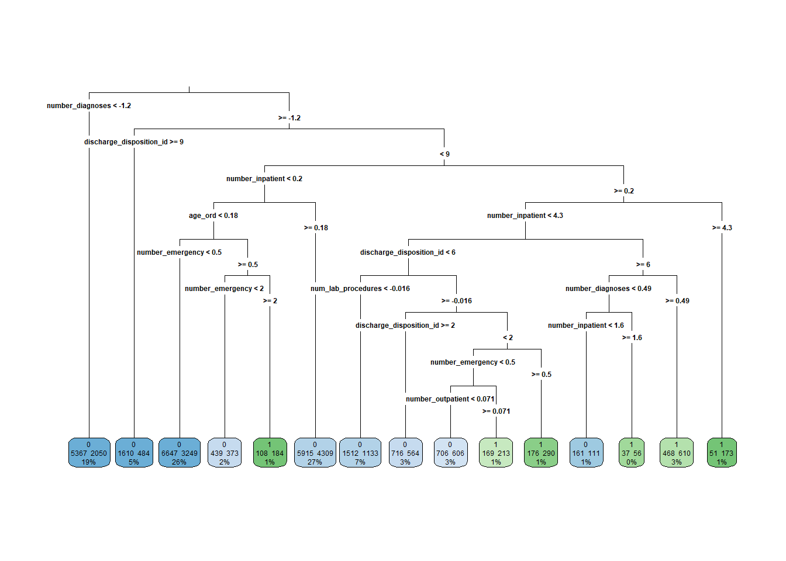
Ensemble learning combines models into a sort-of super model in one of three ways: stacking, bagging and boosting. FairStacks is a stacking framework that will add a Fairness Penalty to the model stack.
A standard ensemble might stack the model with an algorithm like:
\(\hat w = argmin_w \frac {1} {n} \Sigma^n_{i=1}Loss(y,\Sigma_j,w_j \hat f_j (x_i))\)
The FairStacks model adds a “Fairness Penalty” similar to what we might see in an \(\ell_1\)-regression model, so the algorithm looks like:
\(\hat w = argmin_w \frac {1} {n} \Sigma^n_{i=1}Loss(y,\Sigma_j,w_j \hat f_j (x_i))+\lambda |\Sigma_j w_j \hat b_j|\)
For this algorithm, a larger \(\lambda\) value is used to force the “average bias” down to zero, resulting in a fairer ensemble.
First, let’s see what a regular stacked model would look like without the fairness penalty.
# regular stack
# Convert SVM margin to probabilities
sigmoid <- function(x) {
1 / (1 + exp(-x))
}
prob_pred_svm <- sigmoid(margin_scores)
# Tree probabilities
tree_probs <- predict(tree_model, test_data, type = "prob")
prob_pred_tree <- tree_probs[, "1"]
# Combine all model probabilities using correct variable names
ensemble_train <- data.frame(
nb = nb_prob,
lda = lda_pred$posterior[, 2],
svm = as.numeric(prob_pred_svm),
tree = as.numeric(prob_pred_tree),
logreg_plain = as.numeric(prob_pred_plain),
logreg_ridge = as.numeric(prob_pred_ridge),
logreg_lasso = as.numeric(prob_pred_lasso)
)
# Normalize each prediction (min-max scaling)
ensemble_scaled <- ensemble_train %>%
mutate(across(everything(), ~ (. - min(.)) / (max(.) - min(.))))
F_train <- as.matrix(ensemble_scaled)
n <- nrow(F_train)
k <- ncol(F_train)
# Response: convert 0/1 → -1/+1
y_train_ens <- ifelse(test_data$readmit_at_all == 1, 1, -1)
# CVXR optimization
W <- Variable(k)
b <- Variable(1)
margin <- F_train %*% W + b
log_loss <- sum(logistic(- y_train_ens * margin)) / n
lambda <- 0.0001
objective <- Minimize(log_loss + lambda * sum_squares(W))
problem <- Problem(objective)
result <- solve(problem)
# Predict and evaluate
weights <- result$getValue(W)
intercept <- result$getValue(b)
ensemble_scores <- F_train %*% weights + intercept
final_pred <- ifelse(ensemble_scores >= 0, 1, 0)
y_true <- as.numeric(as.character(test_data$readmit_at_all))
ensemble_cm <- confusionMatrix(as.factor(final_pred), as.factor(y_true))
# Plot confusion matrix
ensemble_cm_df <- as.data.frame(ensemble_cm$table)
ggplot(data = ensemble_cm_df, aes(x = Reference, y = Prediction, fill = Freq)) +
geom_tile(color = "white") +
geom_text(aes(label = Freq), size = 5) +
scale_fill_gradient(low = "white", high = "purple") +
labs(
title = "Stacked Ensemble Confusion Matrix",
x = "Actual Label",
y = "Predicted Label"
) +
theme_minimal()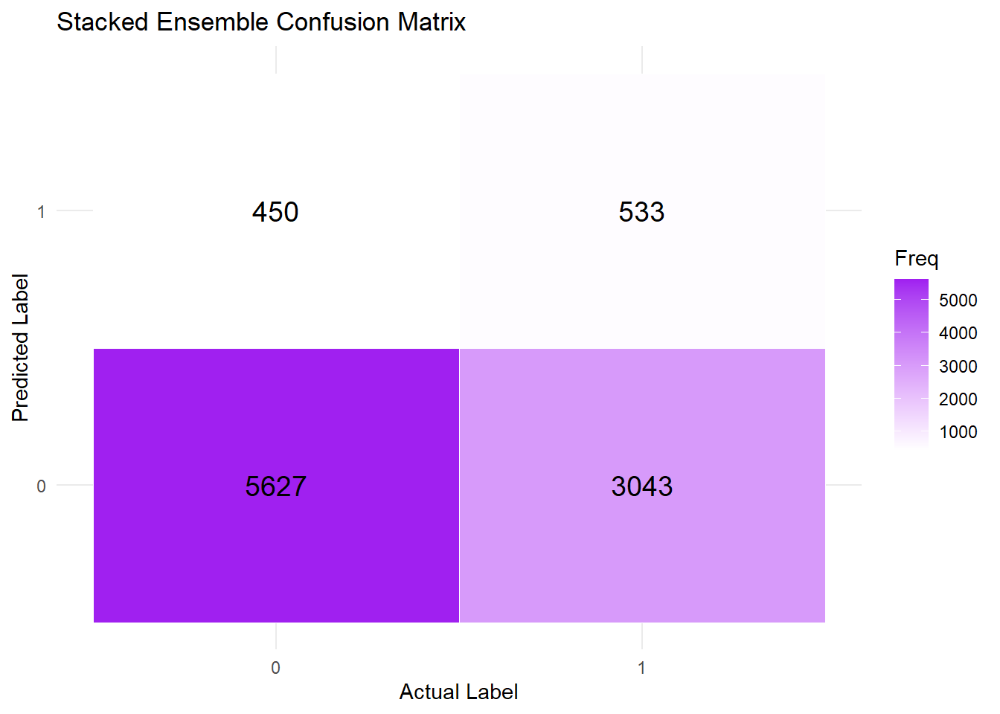
Ensemble Accuracy: 0.6381 # Define model names in the same order as your ensemble_train
model_names <- c(
"NaiveBayes", "LDA", "SVM", "DecisionTree",
"LogReg_Plain", "LogReg_Ridge", "LogReg_Lasso"
)
# Extract weights from regular stack optimization
regular_weights <- as.numeric(result$getValue(W))
# Build tibble
weights_df_regular <- tibble(
Model = factor(model_names, levels = model_names),
Weight = regular_weights
)
# Plot
ggplot(weights_df_regular, aes(x = Model, y = Weight)) +
geom_bar(stat = "identity", fill = "steelblue") +
theme_minimal() +
labs(
title = "Regular Stack Ensemble Weights",
x = NULL,
y = "Model Weight"
) +
theme(axis.text.x = element_text(angle = 45, hjust = 1))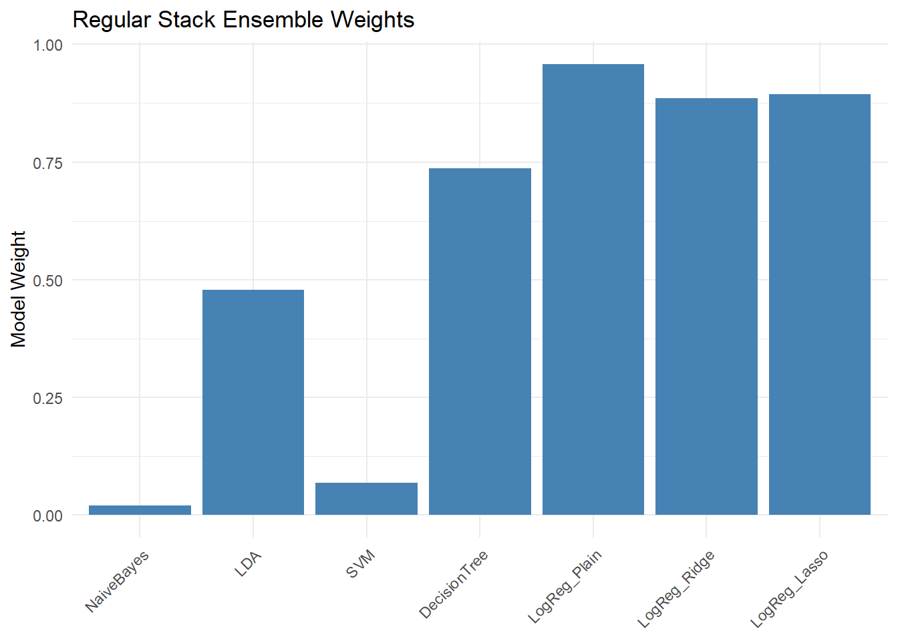
Now comparing the regular stack to a FairStack:
# Response vector
y_train_ens <- ifelse(test_data$readmit_at_all == 1, 1, -1)
# Estimate bias per model (Demographic Parity)
# protected attribute
protected_attr <- test_data$race_AfricanAmerican
# demographic disparity per model
get_ddp <- function(preds, protected) {
mean(preds[protected == 1]) - mean(preds[protected == 0])
}
bias_vec <- sapply(ensemble_scaled, get_ddp, protected = protected_attr)
bias_vec <- matrix(bias_vec, nrow = length(bias_vec), ncol = 1)
# FairStacks Optimization
n <- nrow(F_train)
k <- ncol(F_train)
W <- Variable(k)
b <- Variable(1)
margin <- F_train %*% W + b
log_loss <- sum(logistic(- y_train_ens * margin)) / n
lambda <- 0.0001 # regularization on weights
gamma <- 10 # fairness penalty
fair_penalty <- abs(t(bias_vec) %*% W)
objective <- Minimize(log_loss + lambda * sum_squares(W) + gamma * fair_penalty)
problem <- Problem(objective)
result <- solve(problem)
# Predict and evaluate
weights <- result$getValue(W)
intercept <- result$getValue(b)
ensemble_scores <- F_train %*% weights + intercept
final_pred <- ifelse(ensemble_scores >= 0, 1, 0)
y_true <- as.numeric(as.character(test_data$readmit_at_all))
ensemble_cm <- confusionMatrix(as.factor(final_pred), as.factor(y_true))
# Plot confusion matrix
ensemble_cm_df <- as.data.frame(ensemble_cm$table)
ggplot(data = ensemble_cm_df, aes(x = Reference, y = Prediction, fill = Freq)) +
geom_tile(color = "white") +
geom_text(aes(label = Freq), size = 5) +
scale_fill_gradient(low = "white", high = "purple") +
labs(
title = "FairStacks Ensemble Confusion Matrix",
x = "Actual Label",
y = "Predicted Label"
) +
theme_minimal()FairStacks Accuracy: 0.6331 # Define model names — in same order as used in the ensemble
model_names <- c(
"NaiveBayes", "LDA", "SVM", "DecisionTree",
"LogReg_Plain", "LogReg_Ridge", "LogReg_Lasso"
)
# Extract weights from CVXR solution
fair_weights <- as.numeric(result$getValue(W)) # shape: [k x 1]
# Create data frame
weights_df <- tibble(
Model = factor(model_names, levels = model_names),
Weight = fair_weights
)
# Plot
ggplot(weights_df, aes(x = Model, y = Weight)) +
geom_bar(stat = "identity", fill = "darkgreen") +
theme_minimal() +
labs(
title = "FairStacks Ensemble Weights",
x = NULL,
y = "Model Weight"
) +
theme(axis.text.x = element_text(angle = 45, hjust = 1))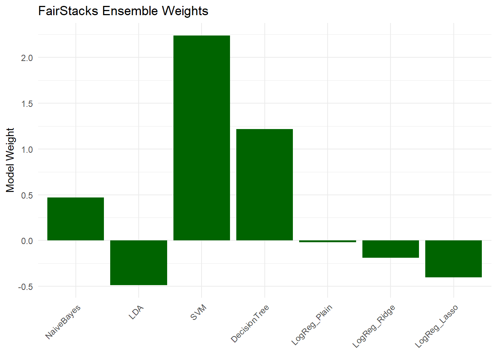
Although the FairStack model performs slightly worse in-terms of predictions than its more-biased counterpart, reducing the bias across features in this model, which includes demographic/characteristic features of race, age and gender, allows for a more socially-equitable model than the former.